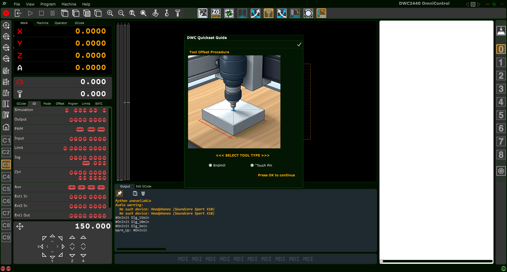
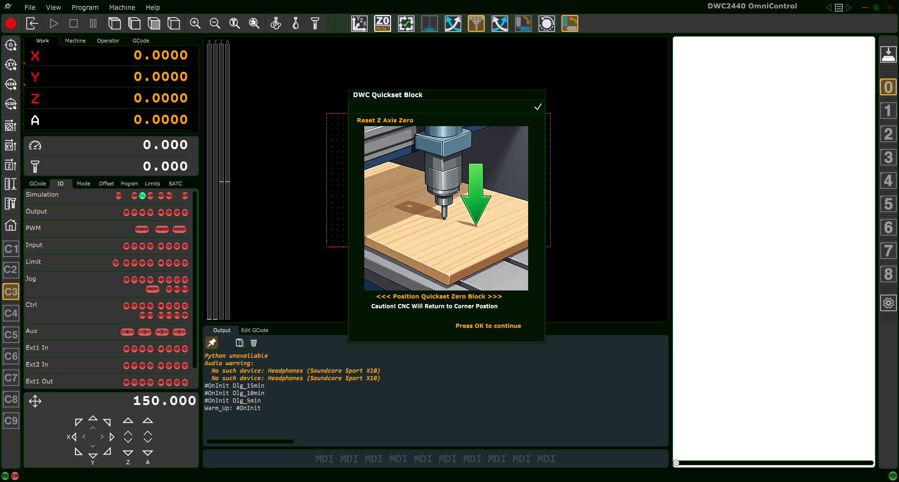
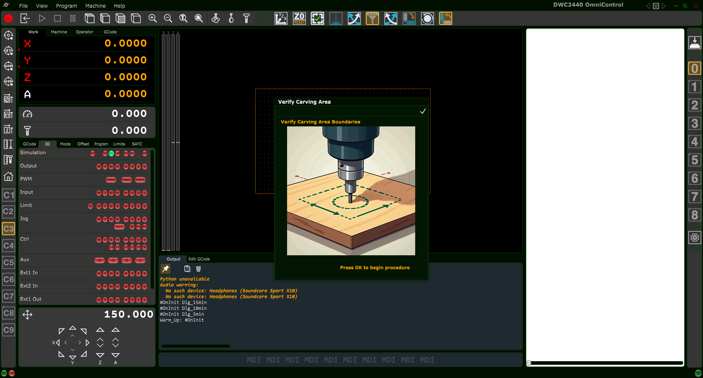
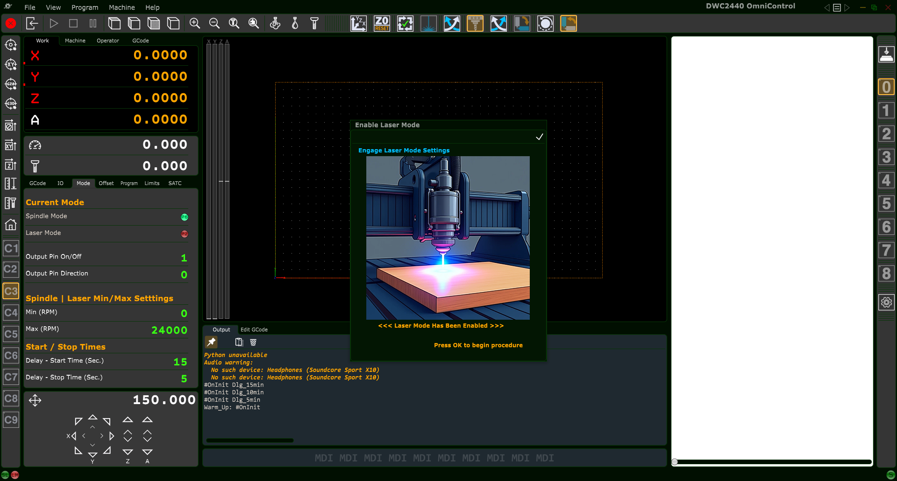
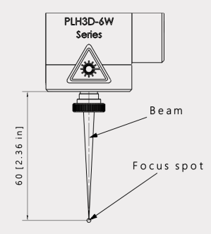
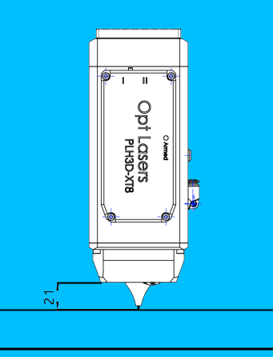
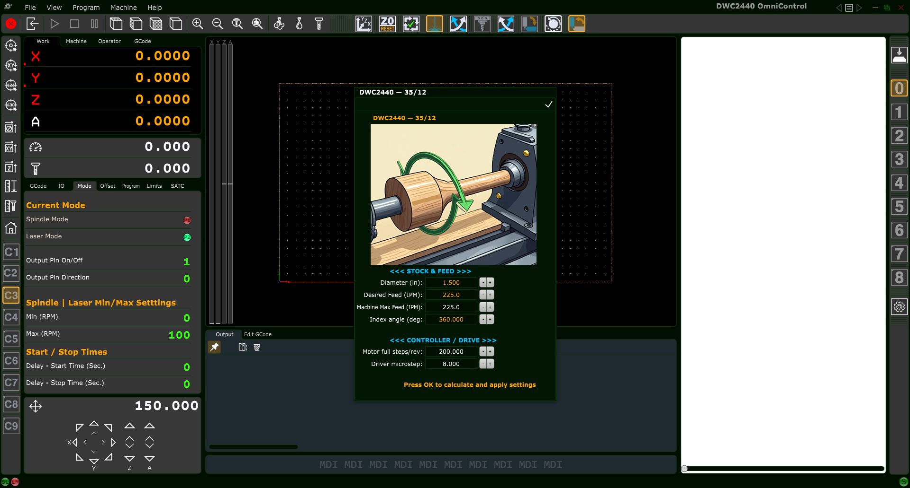
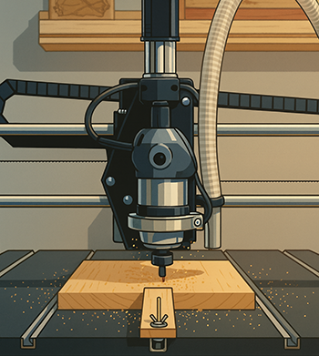

Coordinate Systems & OmniControl Left Toolbar (C1–C9)
This chapter explains how CNC coordinate systems work in PlanetCNC TNG,
how OmniControl makes them easier to use with the C1–C9 buttons,
and how to correctly set up and edit coordinate systems so your jobs run
exactly where you expect.
1. CNC Coordinate Systems – The Big Picture
When you run a CNC machine, the controller is always tracking position in
more than one coordinate system at the same time. OmniControl doesn’t
change how PlanetCNC TNG works—it simply makes these systems easier to
see and use.
There are four main concepts to understand:
Machine Coordinate System (G53)
Work Coordinate Systems (G54–G59.3)
Work Offset (a temporary shift, similar to G92)
Tool & Axis Offsets, and Transformations
1.1 Machine Coordinates (G53)
The machine coordinate system is the controller’s
internal reference frame. Its origin (0,0,0) is defined by the machine
builder and the homing switches. When you Home the
machine, TNG re-finds this internal origin.
You normally do not program directly in machine coordinates,
because the origin is often at the back or corner of the machine—far
away from your actual part. Think of machine coordinates as the CNC’s
own GPS grid for the entire travel envelope.
1.2 Work Coordinate Systems (G54–G59.3)
To make programming practical, we use work coordinate
systems. Each one defines a convenient origin on or near your
part, jig, or fixture. PlanetCNC TNG supports many work coordinate
systems:
G54–G59 – Work coordinate systems 1–6
G59.1–G59.3 – Work coordinate systems 7–9
In OmniControl, these nine systems are mapped to the
C1–C9 buttons on the left toolbar:
Button
Coordinate System
Standard G-code
C1
Work Coordinate System 1
G54
C2
Work Coordinate System 2
G55
C3
Work Coordinate System 3
G56
C4
Work Coordinate System 4
G57
C5
Work Coordinate System 5
G58
C6
Work Coordinate System 6
G59
C7
Work Coordinate System 7
G59.1
C8
Work Coordinate System 8
G59.2
C9
Work Coordinate System 9
G59.3
Why use multiple work coordinate systems?
They are ideal for multi-fixture jobs, multiple vises, jigs with
several stations, rotary setups, or simply keeping a “standard” table
origin and one or more dedicated fixture origins.
1.3 Work Offset (Temporary Shift)
On top of the chosen work coordinate system, PlanetCNC supports a
work offset—a temporary shift that says “treat the
current position as some other coordinate value.” This is similar in
spirit to a G92 offset.
Work offsets are useful for minor temporary adjustments or special
probing routines. In OmniControl, work offsets are displayed in the
Offset tab under the
Work Offset section.
1.4 Tool Offsets and Other Layers
The final position the machine moves to is the result of several
layers combined:
Machine coordinates (G53)
Coordinate System (G54–G59.3)
Work Offset (temporary shift)
Tool Offset (tool length and optional XYZ)
Axis Offset and Transformations (warp, rotate, etc.)
OmniControl doesn’t change this math—it simply shows each layer in one
place on the Offset tab, and lets you quickly choose
the active work coordinate system using C1–C9.
2. OmniControl Left Toolbar – Coordinate System Buttons (C1–C9)
The C1–C9 buttons on the left toolbar are OmniControl’s shortcut to
PlanetCNC TNG’s work coordinate systems. These buttons are identical on
all Digital Wood Carver CNC models—only the top and right toolbars vary
between machines.
OmniControl coordinate system buttons C1–C9. Each one selects a work
coordinate system (G54–G59.3).
2.1 Button Mapping
The mapping between buttons and coordinate systems is:
C1 → G54 – Default work coordinate system
C2 → G55
C3 → G56
C4 → G57
C5 → G58
C6 → G59
C7 → G59.1
C8 → G59.2
C9 → G59.3
Many shops adopt a “house rule” for these buttons, for example:
C1/G54 for main spoilboard origin, C2/G55 for left vise,
C3/G56 for right vise, C4/G57 for rotary origin, and so on.
Consistent use reduces mistakes.
2.2 Selecting a Coordinate System with C1–C9
Make sure the machine is homed and ready for operation.
On the left toolbar, click the desired C# button.
The selected button will highlight.
PlanetCNC TNG activates the corresponding work coordinate system
(G54–G59.3).
The Offset tab in the State Panel updates to show
the offsets associated with that system.
From this point on, all jogging, zeroing, and most G-code moves are
interpreted in the chosen work coordinate system.
3. Setting Up & Editing Coordinate Systems
Before OmniControl’s C1–C9 coordinate system buttons can be used
effectively, each coordinate system must be configured. This tells the
controller where each fixture, jig, vise location, or machining origin
exists in physical space.
All coordinate system locations are defined
relative to Machine Coordinates (G53). Machine
coordinates represent the CNC’s internal “absolute map” of the table,
which becomes valid immediately after Homing.
OmniControl makes switching systems easy with C1–C9, but the creation
and editing of these systems occurs in the standard PlanetCNC TNG
interface:
Machine →
Coordinate System →
Edit Coordinate Systems…
3.1 Opening the Coordinate System Editor
On the top menu bar, click Machine.
Hover over Coordinate System.
Click Edit Coordinate Systems….
The Coordinate System Editor window appears, showing a list of
systems on the left and properties for the selected system on the
right.
3.2 How Coordinate Systems Are Defined
Coordinate system offsets (G54–G59.3) are always based on the
current machine position (G53) at the time of setup.
The workflow is:
Home the machine.
Jog to the desired zero point for that coordinate system.
Open the Coordinate System Editor and manually enter the machine
coordinates displayed on the DRO.
These values become the offset values for the chosen coordinate
system. This modern workflow replaces the older “Copy From” method
shown in some outdated documentation.
3.3 Creating or Setting a Coordinate System
Step 1 – Home the Machine
Homing establishes the machine coordinate system (G53). Without
homing, coordinate system setup will be inaccurate and unsafe.
Step 2 – Jog to the Desired Origin
Move the spindle to the exact location you want to define as the
coordinate system’s zero point. This might be the corner of a
spoilboard, a vise origin, a rotary axis center, or a jig position.
Step 3 – Open the Coordinate System Editor
Use the menu:
Machine →
Coordinate System →
Edit Coordinate Systems…
Step 4 – Select the Coordinate System Number
In the editor, click the system number you want to set:
1 → G54 → OmniControl C1
2 → G55 → OmniControl C2
… up to …
9 → G59.3 → OmniControl C9
Step 5 – Give the System a Meaningful Name
In the Name box, enter something descriptive, such as
“Main Origin – Default”, “Left Vise”, “Rotary Axis”, or “Fixture 2”.
Clear naming reduces mistakes during production.
Step 6 – Manually Enter the Machine Coordinates
Look at the Machine Position (G53) DRO on the left
side of OmniControl. These values show your current position in machine
space, for example:
X: 5.2396
Y: 5.2396
Z: -4.5000
Enter these values into the corresponding Offset
fields in the editor (X, Y, Z, and any additional axes used). This
defines where the coordinate system “lives” in machine space.
Step 7 – Apply the New or Updated Coordinate System
The editor includes two important buttons:
Circle with a plus (⊕) – Creates or sets a
new coordinate system using the values you entered.
Circle with a dot (⊙) – Updates an
existing coordinate system with your new values.
Use the plus button when defining a system for the first time, and the
dot button when modifying or correcting a system that already exists.
Step 8 – Save and Close
Click the checkmark (✔) in the upper-right corner of
the editor to commit your changes and close the window. Your new or
updated coordinate system is now active and ready to use.
3.4 Verifying the Coordinate System
Click the corresponding C1–C9 button in OmniControl.
Open the Offset tab in the State Panel.
Confirm that:
CoordSys Num shows the correct number.
CoordSys X/Y/Z match the values you entered.
Work Offset X/Y/Z are zero unless intentionally used.
The correct Tool Offset is active for the current tool.
If anything looks incorrect, fix it before running a job.
3.5 Best Practices for Digital Wood Carver Users
Always home before editing coordinate systems.
Name each system clearly (for example “Rotary Axis
Origin” instead of “System 6”).
Keep C1/G54 as your primary default table or
spoilboard origin whenever possible.
Use the Offset tab as the truth source if a job
doesn’t move where you expect.
4. The Offset Tab – Seeing What’s Really Active
When you’re working with multiple coordinate systems and offsets, it’s
easy to get lost. The Offset tab in OmniControl is your
“truth detector.” It shows each layer that affects motion.
From top to bottom, you will see:
Tool Offset – Indicates whether a tool offset is
active and shows Tool Offset X/Y/Z values.
Coordinate System – Shows whether a coordinate system
is active, the CoordSys Num (1–9) and
CoordSys X/Y/Z/Rot values.
Work Offset – Displays any temporary work offsets
applied on top of the coordinate system.
Axis Offset – Permanent axis-level corrections or
shifts (normally zero for most users).
Transformation – Flags for
Trans Enabled and Warp Enabled, along with the
associated Z extents. For most new users, these remain off.
If your machine is not going where you expect, open the
Offset tab and check:
Is the correct coordinate system active?
Are Work Offsets zero unless needed?
Is a Tool Offset active that you planned for?
Are Transformations disabled unless you specifically enabled them?
OmniControl’s C1–C9 buttons and the Offset tab work together: you
select the system you want with the buttons, and
verify what’s truly active using the Offset tab.
DWC Quickset Procedure – XYZ Origin Button
The DWC Quickset Procedure is an OmniControl-exclusive setup routine that automatically
sets the X, Y, and Z Work Offset Origin for your job using the
DWC Quickset Zeroing Tool. This section explains when to use it, how to prepare your
machine, and how to run the procedure safely for all Digital Wood Carver models.
OmniControl DWC Quickset Procedure button (XYZ Origin).
Clicking this button starts the guided Quickset setup workflow.
1. What the DWC Quickset Procedure Does
The DWC Quickset Procedure automatically locates the front-left corner of
your material and sets it as the active work coordinate system origin
(for example G54 when C1 is selected). During the routine, OmniControl uses the
DWC Quickset Zeroing Tool block and either an endmill or the supplied 0.250"
Touch Pin dowel to probe the block and calculate:
X Work Offset – front-left X edge of the material
Y Work Offset – front-left Y edge of the material
Z Work Offset – top surface of the material
When the routine is complete and the block is removed, your CNC is ready to run the
project with an accurate, repeatable origin.
2. When to Use the Quickset Procedure
Use the DWC Quickset Procedure when you want:
Fast, repeatable setup of the front-left corner as your origin
Automatic setting of X, Y, and Z work offsets
Consistent setup for sheet goods, blocks, and jigs
To recover a known origin after a tool change or new setup
The Quickset routine is especially helpful for new CNC users, because OmniControl
guides every step and minimizes manual zeroing errors.
3. Required Setup Before Running Quickset
Before you click the Quickset button, make sure all of the following
conditions are met.
3.1 Place the DWC Quickset Zeroing Tool
Position the Quickset Block on the front-left corner of your material.
Align the two reference faces of the block with the front and left edges of the stock.
3.2 Install a Valid Tool (Endmill or Touch Pin)
The Quickset routine can be performed with:
An endmill up to 2.000" diameter with a
straight cutting edge, or
The supplied 0.250" Touch Pin dowel that ships with the
DWC Quickset Zeroing Tool.
If your initial cutting tool is a V-bit, tapered ball nose, form tool, or any bit that
does not have a straight sidewall, you must use the Touch Pin for
the Quickset operation. You will then swap to the actual cutting tool during the
guided sequence.
3.3 Position the Spindle for the Start Point
Before starting the Quickset routine:
Jog the machine so the center of the tool is directly over the
corner hole in the Quickset Block.
Ensure the tip of the tool is above the top surface of the block
(not touching it).
Verify there is enough clearance for motion in X, Y, and Z.
3.4 Model-Specific Electrical Setup
Different DWC models handle continuity and grounding for probing in different ways.
Use the instructions below that match your machine.
3.4.1 DWC1824 – Requires Both Clips
On the DWC1824, the Quickset Block is not wired directly to the
controller, so you must transfer the continuity circuit through the standard Z-touch
system:
Clip the Quickset Block Gator Clip to the machine’s
Z-Zeroing Touch Plate. This transfers the Output 2 continuity signal into the Quickset Block.
Clip the Z-Zeroing Ground Clip to the
router bit shank. This completes the circuit back to the controller.
Both clips are required for the Quickset routine to detect contact on a DWC1824.
3.4.2 DWC2440 – Quickset Clip Only
On the DWC2440, the Quickset Block is also not wired directly to the controller,
but the machine ground is handled differently:
Clip the Quickset Block Gator Clip to the machine’s
Z-Zeroing Touch Plate.
The Z-Zeroing system’s ground lead is permanently
attached to the machine leg and does not need to be moved
to the router bit.
No additional ground connection to the bit is required on the DWC2440.
The DWC4848 and DWC5100 use spindles with ceramic bearings, which do not
naturally conduct electricity through the spindle body. In order for the Quickset routine
to detect contact, a special grounding magnet must be used:
Attach the Grounding Magnet to either the
spindle collet nut or directly to the
tool shank/router bit.
Make sure the magnet is firmly attached and the cable is safely routed away
from moving parts.
The Quickset Block itself is wired directly to the controller on these machines,
so only the grounding magnet is required.
3.4.5 Summary – Model Setup Matrix
Model
Quickset Block Wiring
Required Setup
DWC1824
Not wired
Block clip to Z plate, ground clip to bit shank
DWC2440
Not wired
Block clip to Z plate, ground permanently on machine leg
DWC2636
Direct wired
No clips or grounding steps required
DWC3648
Direct wired
No clips or grounding steps required
DWC4848
Direct wired
Attach grounding magnet to collet nut or bit
DWC5100
Direct wired
Attach grounding magnet to collet nut or bit
4. Starting the DWC Quickset Procedure
With the Quickset Block placed, the correct tool installed, the spindle positioned over the
corner hole, and the electrical setup verified for your model, you are ready to run the
Quickset routine.
Click the DWC Quickset (XYZ Origin) button on the top toolbar. OmniControl
opens the first dialog in the Quickset workflow.

Initial Quickset dialog – choose Endmill or
Touch Pin to match the tool currently installed in the spindle.
4.1 Select the Tool Type
In the first Quickset dialog, select the tool you will use for the probing routine:
Endmill – for straight-wall tools up to 2.000" diameter
Touch Pin – for the 0.250" dowel pin included with the Quickset accessory
After making your choice, click the OK button
(✔ in the upper-right corner) to continue.
Tip: If your first cutting tool is a V-bit, tapered ball nose, form tool, or
any non-straight cutter, always choose Touch Pin. You will install the actual
cutting tool later in the guided sequence.
5. Quickset Workflow – Endmill Mode
Endmill Offset Procedure – enter the exact diameter of your endmill before starting the routine.
5.1 Enter the Endmill Diameter
When Endmill is selected, OmniControl displays the
Endmill Offset Procedure window. Enter the exact cutting diameter:
Use decimal format, e.g. 0.250, 0.500, 1.000, 2.000.
The maximum allowed diameter is 2.000".
After entering the diameter, click OK
(✔) to begin the motion sequence.
5.2 Endmill Touch Sequence (Z, then X, then Y)
OmniControl performs the following steps automatically:
Move the endmill to the center of the Quickset Block and
gently touch the top surface to establish the initial
Z Work Offset reference.
Move in X and touch the X-reference face of the block
to calculate the X Work Offset.
Move in Y and touch the Y-reference face of the block
to calculate the Y Work Offset.
Apply the computed X, Y, and Z Work Offsets to the currently
active coordinate system (C1–C9 / G54–G59.3).
When the routine finishes, the spindle will stop at a safe location. You may remove
the Quickset Block and begin machining your project.
6. Quickset Workflow – Touch Pin Mode
Touch Pin Offset Procedure – enter a safe Tool Change Location for the automatic move between probing and tool change.
6.1 Enter the Tool Change Location
When Touch Pin is selected, OmniControl displays the
Touch Pin Offset Procedure window. You must specify a
Tool Change Location where the machine will move after probing
X and Y so you can safely swap tools:
X – Safe X position for changing tools
Y – Safe Y position for changing tools
Z – Clearance Z height above the work area
Choose a location that is clear of clamps, fixtures, and the Quickset Block and that
provides comfortable access to the tool. Click OK
(✔) to start the routine.
6.2 Touch Pin Motion Sequence (Z, then X, then Y)
With the Touch Pin installed, OmniControl runs the following sequence:
Move to the center of the Quickset Block and touch the
top surface to establish an initial safe Z reference.
Move in X and touch the X-reference face of the block.
Move in Y and touch the Y-reference face of the block.
Move to the specified Tool Change Location and automatically
pause.
6.3 User Tool Change
At the Tool Change Location:
Remove the Touch Pin from the spindle.
Install the actual cutting tool you will use for your job.
Press the Pause button again to resume the Quickset routine.
6.4 Final Z Touch and Offset Application
After resuming, OmniControl:
Returns to the Quickset Block.
Touches the top surface again with the actual cutting tool to set the
final Z Work Offset.
Applies the computed X, Y, and Z Work Offsets to the active
coordinate system.
Once complete, remove the Quickset Block. Your origin is now fully defined and the
machine is ready to run the toolpath.
7. Safety – Exiting a Quickset Dialog
Important: Every Quickset dialog includes an
OK (✔) button in the top-right corner. Clicking this button
confirms the operation and starts automatic machine motion.
If you clicked the Quickset button by mistake or decide not to run the procedure:
Do not click OK.
Press the keyboard Esc key to cancel and close the dialog.
Always make sure the Quickset Block is in the correct position, clips or grounding
accessories are installed (if required for your model), and the area is clear before
starting the routine.
8. After the Quickset Procedure
When the Quickset routine is finished:
Remove the DWC Quickset Zeroing Tool block from the work area.
Verify that the correct coordinate system (C1–C9) is active.
Optionally jog to X0 Y0 Z0 in the work coordinate system to visually
confirm the origin location at the lower-left corner of your material.
At this point the machine is fully set up and ready to run your project using the new
work offset origin.
Set Z Zero – Resetting Z After a Manual Tool Change
The Set Z Zero button provides a fast, automated, and highly accurate method
to re-establish your Z-axis work offset after a manual tool change.
This routine ensures the new tool is zeroed to the exact same Z reference that was established
earlier using the DWC Quickset XYZ Origin Procedure.
Use this routine anytime your project requires more than one cutting tool.
Only Z is affected — X and Y remain unchanged.
1. When to Use Set Z Zero
Typical situations where this tool is required:
Switching from a roughing bit to a finishing bit
Changing V-bit angles (e.g., 90° → 60°)
Changing from endmill → ball nose → tapered bit
Any tool change where tool length differs (most cases)
The Set Z Zero function updates only the Z-axis work offset.
Your X and Y origins remain exactly as they were.
2. Required Setup Before Running the Operation
For accuracy and safety, complete the following:
2.1 Place the DWC Quickset Zeroing Tool Block
Place the Quickset block in the exact same location used during the original XYZ Origin procedure.
(See: DWC Quickset Procedure – XYZ Origin Button → Section 3.1)
2.2 Install Your New Tool
After the previous toolpath completes, install the next tool you intend to use and ensure it is clamped securely in the collet.
2.3 Ensure the Tool is Elevated (No Need to Move to the Block Manually)
The tool can be located anywhere on the table when you start the Set Z Zero routine.
The only requirement is:
The tool tip must be positioned higher than the top of the Quickset block
You must ensure the spindle has clearance from clamps or fixtures during travel
When the routine begins, OmniControl automatically performs an absolute X/Y move to return
the spindle directly above the Quickset block before probing begins.
The Quickset block relies on continuity between the tool and the block.
Certain DWC machines require different grounding configurations:
DWC1824:
Clip the Quickset block’s gator clip to the machine’s Z-Zero touch plate.
Clip the machine’s touch-plate ground clip to the router bit’s shank.
DWC2440:
Clip the Quickset block’s gator clip to the machine’s Z-Zero touch plate.
The machine’s ground clip attaches to the leg of the CNC frame (not the bit).
DWC4848 & DWC5100 (ceramic-bearing spindles):
Attach the included grounding magnet to the spindle’s collet nut or to the installed tool.
These spindles cannot conduct through bearings, so the magnet is required.
All other units:
The Quickset block is wired directly to the controller and does not require special grounding steps.
4. Running the Set Z Zero Routine
Press the Set Z Zero button in the top toolbar.
OmniControl will display a confirmation popup before beginning.
4.1 Confirmation Popup (Reset Z Axis Zero)

DWC Quickset – Reset Z Axis Zero confirmation window.
The popup gives the user two choices:
Press OK (✔) — Runs the Set Z Zero procedure immediately.
Press ESC (keyboard) — Cancels the operation safely.
4.2 What the Routine Does Automatically
After pressing OK, OmniControl will:
Move the spindle automatically to the Quickset block’s saved X/Y location
Lower the tool until it contacts the block
Calculate and store the new Z-axis work offset
Raise the tool to a safe height
Complete the operation
This ensures every tool in your project references the same Z origin established during your initial Quickset XYZ procedure.
5. After the Z Zero Operation Completes
Remove the Quickset block
Load the correct toolpath for the new tool
Press Start to continue the project
6. Safety Notes
Always ensure clamps and fixtures are clear of the probing path
Never press OK unless the Quickset block is positioned correctly
Press ESC to abort at any time before confirmation
Verify the tool is securely tightened before running the routine
Verify Carving Area (Trace Function)
The Verify Carving Area button performs a visual “trace” of the outer
boundary of your loaded toolpath. This lets you confirm:
That your material is oriented correctly on the table
That clamps, screws, and fixtures are clear of the carving extents
That the toolpath fits within the machine’s travel limits
OmniControl Verify Carving Area top-toolbar button.
Run this routine after your project G-code is loaded and your X, Y, and Z work offset
origin has been set (for example, using the DWC Quickset XYZ Origin procedure).
1. What the Verify Carving Area Routine Does
When executed, OmniControl raises the tool to the job’s
G-code Safe Height (often labeled “Z Gap above Material”) and traces
the X–Y extents of the toolpath. This provides a clear preview of the carving footprint
before any material is cut.

Verify Carving Area confirmation popup that appears before beginning the trace.
2. Requirements Before Running
Before clicking the button, make sure:
Your project G-code file is loaded in OmniControl.
Your Work Offset Origin (X0, Y0, Z0) is correctly set.
Material is securely clamped, and fixtures are placed where you expect them.
3. Starting the Verify Carving Area Routine
Click the Verify Carving Area button in the top toolbar.
When the confirmation popup appears:
Click OK (✔) to begin the trace, or
Press ESC on the keyboard to cancel the operation.
Tip: If you accidentally open the Verify Carving Area dialog but do not
want to run the routine, always press ESC to exit instead of OK.
4. What Happens During the Trace
4.1 Lift to Safe Z Height
After confirmation, OmniControl first raises the tool to the programmed
G-code Safe Height. This provides vertical clearance above your material
surface for the entire trace motion.
4.2 Outline the Carving Boundary
The CNC then moves in X and Y to trace the outer extents of the loaded toolpath.
This motion follows the maximum X–Y coordinates of the job, giving you a preview
of the full carving footprint.
On machines equipped with homing and limit switches, if the toolpath would exceed
the machine’s travel, OmniControl will stop and report a
“Machine Limits Reached” error. This lets you fix the issue before
any cutting begins.
4.3 Return to Work Origin at Safe Height
When the trace completes, OmniControl returns the spindle to:
X = 0 (current work coordinate system X zero)
Y = 0 (current work coordinate system Y zero)
Z = G-code Safe Height (safe travel height above material)
If the spindle does not return smoothly to this position, it may indicate lost
steps, mechanical binding, or a work offset mismatch that should be corrected
before carving.
5. Safety Notes
The spindle does not turn on during this routine.
Keep hands, tools, and loose items clear of the machine while the trace runs,
even though the tool is above the material.
If anything looks wrong during the motion, press the machine’s
Stop or E-Stop and investigate before continuing.
Laser Mode Overview
Laser Mode in OmniControl switches the CNC from routing or spindle carving operations
to laser engraving and laser cutting. When enabled, OmniControl reroutes
all spindle control commands so they safely and correctly operate your attached digital
laser module instead.
Laser Safety – Please Read Before Continuing
Always wear proper laser-rated eye protection suitable for your laser’s wavelength.
Operate the laser only in a well-ventilated area and use fume extraction whenever possible.
Keep a suitable fire extinguisher nearby. Remove flammable items (solvents, rags, sawdust piles) from the work area.
Monitor the workpiece constantly for flare-ups or sustained flame. If anything looks unsafe, press Emergency Stop immediately.
Never leave the laser running unattended – not even for a short job.
Only cut or engrave materials you know are safe for laser use. Some plastics and composites can release toxic fumes.

Laser Mode activation popup shown when enabling laser control.
1. What Laser Mode Does
When you click the Enable Laser Mode button, OmniControl will:
Disable spindle output and activate laser PWM output
Switch the controller into dedicated laser-engraving mode
Update the Mode tab to show Laser Mode = Active
Convert spindle power commands into laser power commands
Apply laser min/max power limits and start/stop timing
This ensures all laser projects run safely, consistently, and without any risk of
accidentally powering the router or spindle.
2. Safety Requirements Before Enabling Laser Mode
2.1 Router-equipped Units (DWC1824 & DWC2440)
Ensure the router’s power switch is OFF
Remove the router bit, collet, and nut for maximum clearance
Ensure your laser module is mounted securely
2.2 Spindle-equipped Units (DWC2636, DWC3648, DWC4848, DWC5100)
Spindle will not turn on in Laser Mode, but still remove the collet/nut
Never leave the CNC unattended while the laser is active
Use proper exhaust/ventilation for smoke and fumes
Avoid engraving toxic or unknown materials
3. Laser Mode Confirmation Popup
After clicking the Laser Mode button, OmniControl displays a confirmation popup.
You must click OK (✓) to activate Laser Mode.
Press ESC to cancel.
Once enabled, the Mode tab updates to show Laser Mode is active.
4. What Changes After Laser Mode Is Enabled
Laser Mode = Active indicator turns green
Spindle Mode is disabled
Laser Min/Max power limits are displayed instead of RPM settings
Start/stop timing applies to laser control
Z-axis motion is minimized (laser engraving is primarily 2D)
You must now set:
Laser XY Zero (using the non-burning beam)
Laser Z Focus Height (varies for 6W vs. 45W)
These are covered in the next two chapters.
5. Before Running Any Laser Job
Ensure the bit/collet has been removed
Use the proper focusing tool or gauge
Secure the material flat to the spoilboard
Use the laser’s “non-burning” low-power beam for alignment
6. Returning to Spindle Mode
Laser Mode remains active until you manually switch back using the
Spindle / Mill Mode button.
Full instructions are provided in that chapter.
Laser XY & Z Work Offset Setup (Non-Burning Beam)
Before you can run any laser engraving or cutting project, you must tell OmniControl where
your job starts (Laser XY Zero) and at what height the laser is in perfect focus (Laser Z Zero).
Unlike spindle tools, the laser never physically touches the material. Instead, you use a very
low-power non-burning beam as a pointer to aim and focus the laser safely.
Laser Safety – Please Read Before Continuing
Always wear proper laser-rated eye protection suitable for your laser’s wavelength.
Operate the laser only in a well-ventilated area and use fume extraction whenever possible.
Keep a suitable fire extinguisher nearby. Remove flammable items (solvents, rags, sawdust piles) from the work area.
Monitor the workpiece constantly for flare-ups or sustained flame. If anything looks unsafe, press Emergency Stop immediately.
Never leave the laser running unattended – not even for a short job.
Only cut or engrave materials you know are safe for laser use. Some plastics and composites can release toxic fumes.
This chapter explains how to:
Turn on the laser’s non-burning beam using the MDI bar and the M3/M5 button
Set Laser XY Zero at your chosen datum point
Set Laser Z Zero at the correct focus height
Verify everything before running a job
1. What Is the Non-Burning Beam?
The non-burning beam is the laser running at an extremely low power level. At this power:
The beam is visible on the material
It does not burn or mark the surface when used correctly
You can safely jog the machine to position and focus the laser
On Digital Wood Carver machines, the non-burning beam is enabled manually using the
MDI input bar and the M3/M5 Spindle–Laser On/Off button.
This is used only for setup and alignment. It should not be written into your
project’s G-code file.
2. Before You Begin
2.1 Confirm Laser Mode Is Active
Make sure the machine is in Laser Mode (see the previous chapter). On the
Mode tab you should see:
Laser Mode — active (green)
Spindle Mode — off
2.2 Remove Router/Spindle Tooling
Remove any router bit or endmill
Remove the collet nut and collet, or install a blank collet with no tool
Verify there is plenty of clearance between the router/spindle body and the material
2.3 Secure the Material
Clamp the workpiece flat against the spoilboard
Keep clamps and fixtures outside the planned laser area
Avoid warped or loose stock — focus distance must stay consistent
3. Turning On the Non-Burning Beam (MDI + M3/M5)
To enable the low-power alignment beam, you will use the
Manual Data Input (MDI) bar and the
M3/M5 Spindle–Laser On/Off button in the PlanetCNC top toolbar.
M3/M5 Spindle–Laser On/Off button used to toggle the laser beam.
3.1 Enter S1 in the MDI Bar
Click inside the MDI input bar at the bottom of the OmniControl window.
Type S1 (letter S followed by the number 1).
Press Enter on the keyboard to send the command.
MDI bar with S1 typed in to set low laser power.
This sets the controller’s current spindle/laser power value to its lowest usable level.
3.2 Toggle the Laser On with M3/M5
Click the M3/M5 Spindle–Laser On/Off button in the top toolbar.
The laser turns on at the low power level set by S1.
You should now see a faint, non-burning dot on the material. If the beam is not visible,
carefully adjust your room lighting and verify you are in Laser Mode.
When you are finished aligning the laser, simply click the
M3/M5 button again to turn the beam off.
Important: The S1 and M3/M5 commands used here are
intended only for manual alignment. Do not add this non-burning beam setting
to your project’s G-code file.
4. Setting Laser XY Work Offset Zero
Once the non-burning beam is on, you can set your Laser XY Zero. Most laser jobs use either:
The front-left corner of the design as XY zero, or
The center of the design as XY zero
4.1 Jog to the X/Y Datum Point
Use the OmniControl jog controls to move the laser over your chosen datum point.
Jog slowly as you get close, using small step moves for accuracy.
Align the low-power dot precisely on the corner or center mark of your project.
4.2 Set X = 0 and Y = 0
With the beam aimed at the exact datum point, press X = 0 in OmniControl.
Press Y = 0 in OmniControl.
This sets the current position as the Laser XY Zero for the active work
coordinate system (for example G54, G55, etc.). Your job will now start from this point
when you run the laser G-code.
5. Setting the Laser Z Focus Height (Z Zero)
Z Zero for laser work is defined as the height where the laser is in
perfect focus, not where a tool touches the material.
The focusing method depends on your laser model:
DWC 6-Watt Laser — uses a manual focus ring and visual sharpness of the spot.
DWC 45-Watt Laser — uses a dedicated focusing gauge or spacer.
This chapter gives the basic Z-zero concept. The next two chapters provide detailed
procedures for each laser type.
5.1 Move to Focus Height
With the non-burning beam still on, jog the Z axis down toward the material.
For the 6-Watt Laser, adjust the focus ring and Z height until the dot is
as small and sharp as possible.
For the 45-Watt Laser, place the manufacturer’s focus gauge between the
nozzle and the workpiece, jog Z until the gauge just touches, then remove the gauge.
5.2 Set Z = 0
Once you are confident the laser is at the correct focus height:
Press Z = 0 in OmniControl.
This tells OmniControl that the current Z height is the correct
Laser Z Zero (focus height) for the job.
6. Verification Checklist Before Running a Job
Before starting your laser G-code, verify the following:
Laser Mode is active on the Mode tab
MDI commands are complete and the non-burning beam has been turned off (M3/M5)
DRO shows X = 0 and Y = 0 at your chosen datum
DRO shows Z = 0 at the correct focus height
Material is secure and clamps are clear of the laser path
Proper laser safety glasses are on and ventilation is running
7. What Comes Next
With Laser XY and Z Zero set, you are ready to dial in precise focus for your specific
laser module:
Next Chapter:How to Focus Your DWC 6-Watt Laser
Then:How to Focus Your DWC 45-Watt Laser
How to Focus Your DWC 6-Watt Laser (PLH3D-XT-50)
Correct focus is the most important step for achieving clean, sharp engravings and
optimal cutting performance with your DWC 6-watt laser module. This chapter walks you
through a quick everyday focusing method plus an optional advanced calibration sweep
for users who want maximum precision.
Laser Safety – Please Read Before Continuing
Always wear proper laser-rated eye protection suitable for your laser’s wavelength.
Operate the laser only in a well-ventilated area and use fume extraction whenever possible.
Keep a suitable fire extinguisher nearby. Remove flammable items (solvents, rags, sawdust piles) from the work area.
Monitor the workpiece constantly for flare-ups or sustained flame. If anything looks unsafe, press Emergency Stop immediately.
Never leave the laser running unattended – not even for a short job.
Only cut or engrave materials you know are safe for laser use. Some plastics and composites can release toxic fumes.
The information in this chapter is based on the optical specifications provided in the
PLH3D-XT-50 laser head manual, with all metric values also shown in inches for
convenience.
Legacy PLH3D-XT-50-6W laser head working distance. The critical dimension is the
60.0 mm (2.36 in) from the
bottom face of the laser head to the material surface. The nozzle-to-material gap is about 2 mm (0.08 in) at this height.
1. Working Distance (Focal Distance) Basics
Your 6-watt laser module is factory-designed to produce its tightest beam at a specific
distance from the laser head to the workpiece. This is called the
working distance (WD).
For the PLH3D-XT-50 used on Digital Wood Carver machines, the recommended working
distance is:
60 mm (2.36 inches) between the
bottom face of the laser head and the top surface of the material.
When the Z-axis is set so that the flat underside of the laser body
(bottom face of the laser head) is approximately 60 mm (2.36 in) above the
material, the beam is at its smallest diameter. This produces:
Thinner engraving lines
Cleaner edges with less charring
Greater effective cutting depth
Higher detail in raster engravings
Even small deviations from this distance can reduce beam quality. A difference of
about 1 mm (0.04 in) is usually enough to make the line
visibly wider and softer.
Important: Always measure working distance from the
bottom face of the laser head, not from any nozzle lip or aperture.
2. Safety Before Focusing
2.1 Protective Equipment
Wear proper laser safety glasses rated for your laser’s wavelength.
Ensure good ventilation or fume extraction.
Remove shiny or highly reflective objects from the work area.
2.2 Machine & Workpiece Preparation
OmniControl must be in Laser Mode (see the Laser Mode chapter).
The router/spindle power must be off.
No router bit or cutting tool should be installed in the collet.
Secure the workpiece flat to the spoilboard and keep clamps clear of the beam path.
2.3 Use a Non-Burning Alignment Beam
For focusing and positioning, you should use a very low-power, “non-burning” beam.
This lets you see where the laser is pointed without marking the material.
To enable the non-burning beam:
Click inside the MDI input bar at the bottom of OmniControl.
Type S1 and press Enter to set a very low power value.
Click the M3/M5 Spindle–Laser On/Off button in the top toolbar to turn the beam on.
You should now see a faint dot on the material. When you are done aligning or focusing,
click the same M3/M5 button again to turn the beam off.
Note: The S1 and M3/M5 commands are used here only for
manual alignment and focusing. Do not bake this “non-burning” beam setting into your
project’s G-code files.
3. Quick Focus Method (Recommended)
This method is fast and accurate enough for most engraving and light cutting projects.
3.1 Move to Your Laser XY Zero
Enable the non-burning alignment beam as described above.
Jog the machine so the beam is directly over your chosen
Laser XY Work Zero point (corner or center of your job).
Use smaller jog steps as you get close so you can aim the dot precisely.
3.2 Adjust Z to the Working Distance
Jog the Z-axis up or down slowly.
Stop when the distance from the bottom face of the laser head to the
material is as close as possible to
60 mm (2.36 inches).
Visually confirm that the laser dot is as small and sharp as you can make it.
On many jobs, simply bringing the head to this known working distance is all that is
required for a very good focus.
3.3 Set Laser Z Work Offset
Once the height looks correct:
With the head at the proper working distance, press Z = 0 in OmniControl
(or use your normal “Set Z Zero” workflow for laser jobs).
OmniControl now treats this height as your Laser Z Zero (focus height)
for the active work coordinate system.
3.4 Turn the Beam Off
When you are finished focusing:
Click the M3/M5 Spindle–Laser On/Off button to switch the beam off.
4. Advanced Precision Calibration (Optional)
If you need the thinnest possible lines or the cleanest cuts (for example, tiny text or
high-detail engraving), you can fine-tune focus around the 60 mm working distance.
This is a two-stage calibration process:
Coarse sweep around 60 mm (2.36 in).
Fine sweep around the best result from the coarse sweep.
4.1 Suggested Test Materials
For best visibility when comparing line quality, use:
Black anodized aluminum (excellent test surface)
Black-painted glass or microscope slide (very high contrast)
Thin plywood or other flat, consistent material (acceptable)
On anodized aluminum, slightly tilting the material (about 4–7°) can make differences
in line thickness easier to see.
4.2 Calibration Run #1 – Coarse Sweep
Goal: Find the approximate best focus around the nominal WD.
Set the Z height so the bottom face of the laser head is at
60 mm (2.36 in) above the material.
Prepare a simple G-code that engraves a series of horizontal lines, each at a different
Z height.
For each line, change the Z height in steps of
1 mm (0.04 in), sweeping about
±5 mm (±0.20 in) around the nominal WD.
This will cover roughly 55–65 mm (2.16–2.56 in).
Label each line with the Z height used.
Select the line that is thinnest, sharpest, and highest contrast.
The Z height that produced the best line is your “coarse” best working distance.
4.3 Calibration Run #2 – Fine Sweep
Goal: Refine the best focus to a very small range.
Use the best height found in Run #1 as your center value.
Create a second set of lines, adjusting Z in steps of
0.1 mm (0.004 in) above and below that center value.
Engrave and label each line with its exact Z height.
Carefully inspect the lines under good lighting. Choose the one that is
clearly the narrowest and most consistent.
The Z height for that line is your precise optimal working distance for
this laser and test material.
5. Saving and Reusing Your Focus Height
Jog the head so the bottom face of the laser is again at your optimal height above the material.
At this position, press Z = 0 (or run G92 Z0 in the MDI bar).
Write this height down and keep it with your machine notes. As long as you set the head
to this working distance above the material, you will be at or very close to perfect focus.
6. Adjusting for Different Material Thicknesses
When you change to a thicker or thinner workpiece, your goal is to keep the
distance from the bottom face of the laser head to the material
the same as your calibrated working distance.
Place the new material on the table and secure it.
Jog Z until the head is at your known working distance above the new surface.
Set Z = 0 again for this job.
You only need to repeat the full two-stage calibration when you make major changes,
such as a different laser head, a major hardware change, or if you are chasing
maximum detail on new materials.
7. Air Assist (Recommended)
If your 6-watt laser is used with an air assist nozzle, a gentle, directed airflow can:
Reduce soot and char around engraving lines
Improve cutting depth and edge quality
Help keep the lens cleaner for longer periods
Use moderate air pressure aimed at the cutting point. Excessive pressure is usually not
needed and may blow debris into unwanted areas.
8. Next Steps
With your 6-watt laser correctly focused, you are ready to:
Set up and run engraving and cutting projects in Laser Mode.
Use the Laser XY & Z Work Offset tools covered in the previous chapter.
Move on to the next chapter:
How to Focus Your DWC 45-Watt Laser for users with the higher power module.
Focusing the Legacy 6-Watt Laser (PLH3D-6W Series)
Some Digital Wood Carver machines are equipped with an older Opt Lasers
PLH3D-6W module instead of the newer XT-50 head. The focusing
principles are similar, but the factory working distance and recommended tuning
procedure come from a different manual. This chapter explains how to quickly set
focus for everyday jobs and how to perform a more advanced calibration sweep when
you need maximum sharpness.
Laser Safety – Please Read Before Continuing
Always wear proper laser-rated eye protection suitable for your laser’s wavelength.
Operate the laser only in a well-ventilated area and use fume extraction whenever possible.
Keep a suitable fire extinguisher nearby. Remove flammable items (solvents, rags, sawdust piles) from the work area.
Monitor the workpiece constantly for flare-ups or sustained flame. If anything looks unsafe, press Emergency Stop immediately.
Never leave the laser running unattended – not even for a short job.
Only cut or engrave materials you know are safe for laser use. Some plastics and composites can release toxic fumes.
All distances are given in both metric and imperial units so you can use whichever
system you prefer at the machine.
1. Working Distance for the PLH3D-6W
The working distance (WD) is the ideal distance between the laser
module and the top of your material where the beam is at its smallest and most
powerful.
For the legacy PLH3D-6W head used on Digital Wood Carver machines:
Factory working distance:
60.4 mm = 2.38 inches
(approximately) from the bottom face of the laser head to the top
surface of the material.
With the factory air-assist nozzle installed, this typically leaves about
2 mm (0.08 in) between the nozzle tip and the material
when the head is at the correct working distance.

Legacy PLH3D-6W laser head working distance. The critical dimension is the
60.0 mm (2.36 in) from the
bottom face of the laser head to the material surface.
Important: Always measure working distance from the
bottom face of the laser head (flat underside of the body), not from the
front of the nozzle or the lens opening.
2. Safety Before Focusing
2.1 Protective Gear
Wear laser safety glasses rated for the wavelength of your 6-watt laser.
Provide adequate ventilation or fume extraction.
Keep reflective objects out of the beam path.
2.2 Machine & Workpiece Setup
OmniControl must be in Laser Mode.
The router or spindle power switch must be off.
No router bit should be installed; remove the collet if possible for extra clearance.
Secure your workpiece flat to the spoilboard; keep clamps outside the planned laser area.
2.3 Use a Non-Burning Alignment Beam
For focusing and XY positioning, use a very low-power, “non-burning” beam so you can
see the dot without marking the material.
Click in the MDI bar at the bottom of OmniControl.
Type S1 and press Enter to set a very low power value.
Click the M3/M5 Spindle–Laser On/Off button in the top toolbar to turn the beam on.
When you are done focusing or positioning, click the same M3/M5 button
again to turn the beam off.
Note: The S1 power level and manual M3/M5 command are
for alignment and focusing only. Do not include this “non-burning” setting in your
project G-code.
3. Quick Focus Method (Recommended)
Use this method for everyday engraving and cutting. It is simple, fast, and accurate
enough for most woodworking and sign projects.
3.1 Move to Your Laser XY Zero
Enable the non-burning beam as described above.
Jog the machine so the beam is directly over your chosen
Laser XY Work Zero point (corner or center of the job).
Use smaller jog steps as you get close so you can aim the dot precisely.
3.2 Set Z to the Working Distance
Jog the Z-axis until the distance from the
bottom face of the laser head to the material is as close as
possible to 60.4 mm (2.38 inches).
If you have a gauge block, spacer, or focusing jig for this head, place it on the
material and lower the laser until the bottom face just touches the gauge, then
remove the gauge.
Visually confirm that the laser dot appears small and sharp at this height when the
beam is on at low power.
3.3 Set Laser Z Work Offset
With the head at the correct distance, set Z = 0 in OmniControl
(or use your standard “Set Z Zero” process for laser jobs).
OmniControl now treats this height as the Laser Z Zero (focus height)
for your current work coordinate system.
3.4 Turn the Beam Off
Click the M3/M5 Spindle–Laser On/Off button to switch the beam off.
You are now ready to run a test pattern or your actual job with the legacy 6-watt laser
at its factory working distance.
4. Advanced Precision Focus (Coarse + Fine Sweep)
If you need the thinnest possible lines and maximum detail, you can refine the focus
around the factory working distance using a two-stage test pattern:
a coarse sweep in 1 mm (0.039 in) steps followed by a
fine sweep in 0.1 mm (0.004 in) steps.
4.1 Recommended Test Materials
Black anodized aluminum (best contrast, very crisp lines)
Black-painted glass or microscope slides (excellent visibility)
Flat, consistent wood or plywood (acceptable if the others are not available)
On anodized aluminum, tilting the material slightly (about 4–7°) can make differences
in line thickness easier to see.
4.2 Coarse Focus Sweep (1 mm / 0.039 in Steps)
Goal: Find the approximate best focus around the nominal 60.4 mm distance.
Set Z-zero so that the bottom face of the laser head is at approximately
60.4 mm (2.38 in) above the test material.
Create or load a simple G-code file that engraves a series of straight horizontal
lines. Each line will be burned at a different Z height.
For the first line, use your current Z-zero height as the reference.
Make this line longer than the others so you can easily recognize it.
For the next set of lines, offset the Z height in +1 mm
(+0.039 in) increments and offset each line in X by about
3 mm (0.12 in) so they do not overlap.
Repeat for negative offsets (–1 mm steps) so your test covers roughly
±5 mm (±0.20 in) around the starting point.
This lets you explore a working distance range of about
55–65 mm (2.16–2.56 in).
After engraving, inspect the lines carefully under good lighting and, if possible,
with magnification.
Identify the line that is thinnest, sharpest, and most consistent.
Note the Z offset used for that line.
Example: If the best line was produced at +2 mm, then the laser
is focusing best 2 mm (0.08 in) above your original zero. If it was at
–3 mm, the best focus is 3 mm (0.12 in) below it.
4.3 Apply the Coarse Correction
Adjust your Z-zero by the measured correction amount so that Z = 0 now
corresponds to the height that produced the best coarse line.
This new Z-zero is your coarse best focus height.
4.4 Fine Focus Sweep (0.1 mm / 0.004 in Steps)
Goal: Refine focus around the coarse best height with higher precision.
Using the updated Z-zero from the coarse sweep, create a second test pattern of
lines similar to the first one.
This time, vary the Z height in 0.1 mm
(0.004 in) steps above and below zero. Offset each line in X
by about 3 mm (0.12 in) again.
Engrave the lines using the same material and similar power/speed settings as before.
Examine the lines and choose the one that is clearly the narrowest and most
uniform.
Record the Z offset for that line and update Z-zero by that amount so that
Z = 0 now matches this fine best focus height.
The Z-zero you end up with after the fine sweep is your precisely calibrated
working distance for the PLH3D-6W on that machine.
5. Saving and Reusing Your Focus Height
Once you are satisfied with the focus, jog Z so the laser head is again at this
calibrated height above a flat reference surface.
Set Z = 0 in OmniControl (or run G92 Z0 in the MDI bar).
Write down this focus height in your machine notes as
“Legacy 6-Watt Focus Height”.
As long as you bring the laser head to this same working distance above the material
before setting Z-zero for a job, you will be at or very close to optimal focus.
6. Adjusting for Different Material Thicknesses
When you change material thickness, your goal is to keep the distance from the
bottom face of the laser head to the material equal to your calibrated
working distance (factory 60.4 mm or your refined value).
Secure the new material to the table.
Jog Z until the head is at the calibrated working distance above the new surface.
Set Z = 0 again for that job.
7. Air Assist Considerations
If your PLH3D-6W is equipped with an air-assist nozzle:
At the correct working distance, the nozzle tip should be approximately
2 mm (0.08 in) above the material.
Use moderate airflow directed at the cutting point to reduce soot and improve edge
quality.
Avoid excessive pressure that could blow debris into unwanted areas or disturb small
parts.
8. When to Re-Calibrate
You should repeat the coarse + fine focusing procedure if:
The laser head has been removed, re-mounted, or significantly bumped.
You change to a different lens configuration or nozzle setup.
You are chasing maximum detail on a very demanding engraving job.
For normal day-to-day work, the Quick Focus Method (Section 3) is
usually all you need.
Focusing the 45-Watt PLH3D-XT8 Laser
This chapter explains how to correctly focus the PLH3D-XT8 45-watt laser head on a
Digital Wood Carver CNC using OmniControl. A proper focus gives you clean engraving,
efficient cutting, and greatly reduces burn marks or flare-ups.
Laser Safety – Please Read Before Continuing
Always wear proper laser-rated eye protection suitable for the XT8’s wavelength.
Operate the laser only in a well-ventilated area and use fume extraction whenever possible.
Keep a suitable fire extinguisher nearby. Clear solvents, oily rags, and loose sawdust from the work area.
Watch the beam and workpiece at all times for flare-ups or sustained flame. If anything looks unsafe, press Emergency Stop immediately.
Never leave the laser running unattended – not even for a short job.
Only cut or engrave materials you know are safe for laser use. Some plastics and composites can release toxic fumes.
1. How the XT8 Focus System Works
The PLH3D-XT8 is a high-power, short-focus laser head. Its beam is brought to a tight
focus at a specific distance below the body of the laser. When the laser is at this
distance, the spot on the material is smallest and the power density is highest.
With the XT8, getting this distance correct is especially important. A small focus
error can mean:
Shallower cuts or poor engraving contrast.
More soot and charring around the design.
Needing much slower feed rates or higher power than necessary.
In this chapter we use a simple, repeatable method that does not require
the manufacturer’s height reference tool. Instead, you will rely on the laser’s
non-burning beam and a small gauge block or ruler to dial in focus.
2. XT8 Working Distance (21 mm / 0.83 in)
The XT8’s specified working distance is:
21 mm ≈ 0.83 inches
This is measured from the bottom face of the laser head body (not the
mounting bracket above) down to the top surface of the material.

PLH3D-XT8 recommended working distance: 21 mm (0.83 in) from the bottom face
of the laser body to the material surface.
You do not need to hit this distance to the exact thousandth of an inch, but you should
be very close. In practice you will:
Visually adjust Z until the beam spot on the material is at its smallest.
Confirm that the spacing from laser body to material is roughly 0.83 in
(about 13/16 in) using a gauge block, spacer, or ruler.
3. Preparing the Machine for Focusing
Before you turn on the laser, complete these steps:
Install the XT8 laser head using the appropriate DWC mounting bracket and
ensure all fasteners are tightened.
Remove any router bit and collet nut from the router or spindle.
You want maximum clearance between the router/spindle and the material when the laser
is at its correct Z height.
Enable Laser Mode in OmniControl.
The Mode state panel should show Laser Mode as active and Spindle Mode disabled.
Home the machine so all machine coordinates are known and any limit
switches are active.
Place a flat test board (same material and thickness as your project)
on the table and secure it with clamps or fixtures that are clear of the beam path.
Connect and turn on air assist if available. Air assist dramatically
improves cutting performance and reduces charring.
4. Turning On the Non-Burning Beam
To focus safely, you need the laser to emit a very low-power “non-burning” beam. This
lets you see the spot clearly without cutting or marking the material while you jog
the Z axis.
4.1 Method 1 – Using the MDI Command Bar
Make sure the machine is idle and the laser head is above the test board.
Click in the MDI (Manual Data Input) bar at the bottom of the screen.
Type M3 S1 and press Enter.
The XT8 will turn on at a very low power level. Verify that the beam is on but
not burning the material.
4.2 Method 2 – S1 + Toolbar Toggle
Depending on your workflow, you can also:
Type S1 into the MDI bar and press Enter.
Click the M3/M5 Spindle–Laser On/Off button on the PlanetCNC top toolbar.
This combination sets the low-power value with S1 and uses the toolbar
button to toggle the beam on and off.
For focusing, use the lowest power that still lets you see the spot clearly.
If the material begins to darken or smoke while you are focusing, reduce power or
increase Z height.
5. Focusing the XT8 – DWC Method
With the non-burning beam on and the test board in place, you can now dial in focus:
Jog to a safe starting height.
Use small Z jogs to bring the laser to a point where the nozzle is comfortably above
the board (for example, 1–2 inches). The spot on the material will be large and soft.
Slowly jog Z downward in small steps.
Move the Z axis down in small increments (for example, 0.01 in per jog). Watch
the spot closely – it should become smaller and brighter as you approach the correct
distance.
Find the smallest, sharpest spot.
When you reach a point where the spot stops getting smaller and begins to grow again,
you have passed through the focus point. Move slightly back up until the spot is at
its smallest and most concentrated.
Fine-tune around the focus point.
Jog a few steps above and below this height and “split the difference” until you are
confident you have the best possible focus.
Verify the working distance.
With the Z axis at best focus, measure from the bottom face of the laser body down to
the material. It should be approximately 0.83 inches (21 mm),
roughly the same as a 13/16 in gauge block. If you are significantly off, re-check
your visual focus.
Turn the beam off.
Use M5 in the MDI bar or click the M3/M5 toolbar button again
to ensure the laser is completely off before you continue.
6. Setting Z Zero at the Focus Height
Once you are satisfied with the focus:
Make sure the beam is off (M5 or toolbar toggle).
Without moving the Z axis, set your Z Work Offset at this height.
Use the same Z-zero method you prefer for normal OmniControl operations (for example,
setting Z = 0 in the active work coordinate system for engraving).
Record this Z focus height in your notes for that material and fixture setup. If you
later change material thickness or table spacing, you can return to this workflow to
re-establish focus.
7. Engraving vs. Cutting – Focus Guidelines
The “perfect” focus depends on whether you are engraving the surface or trying to cut
through thicker material.
7.1 Surface Engraving
Use the sharpest possible focus at the material surface.
This produces crisp details and good contrast for logos, text, and photos.
Start with moderate power and higher speeds, then adjust based on test results.
7.2 Cutting Through Material
For thin stock (for example, 1/8 in), you can generally use the same focus as
surface engraving.
For thicker material (for example, 1/4 in or more), you may get better results by
focusing slightly below the surface – roughly in the middle of the material’s thickness
– so the beam has good power density deeper into the cut.
Make a few test cuts with different focus depths and note which setting gives you the
cleanest edge with the least charring.
8. Troubleshooting Focus Issues
Wide or fuzzy beam spot – Re-focus using the visual method above and
verify the 0.83 in working distance.
Material scorches heavily but doesn’t cut deeply – Check that focus
is not too far above the surface; ensure air assist is on and unobstructed.
Beam seems oval or streaked – Inspect the lens for dust or smoke
residue and clean it according to the manufacturer’s instructions.
Frequent flare-ups or small flames – Reduce power, increase
movement speed, and ensure air assist is working. Confirm the material is suitable
for laser cutting.
Focus changes during a job – Check that the laser mount and Z axis
are rigid and that the workpiece is firmly clamped and not warping from heat.
Final Safety Reminder
The PLH3D-XT8 is a powerful cutting laser. Treat every job as a potential fire hazard.
Stay at the machine, ready to hit Emergency Stop or pause if
anything looks wrong.
Never leave the laser operating unattended.
Move Laser & Spindle Position Buttons
These OmniControl buttons let you accurately swap between the router/spindle and
laser positions without losing your project’s work offsets. Once calibrated, you
can route first, then laser, or laser first, then route, and the machine will put
the second tool exactly where the first one was.
OmniControl Move Laser to Spindle Position (left) and
Move Spindle to Laser Position (right) buttons in the top toolbar.
1. What These Buttons Do
When a digital laser is mounted on your CNC, its beam is offset from the center of
the router/spindle by some fixed X/Y distance. These two buttons use that offset to
move one tool to the other tool’s position and automatically re-zero the work
offsets:
Move Laser to Spindle Position – Moves the laser to where the
router/spindle is currently located and sets the laser’s X/Y work offset to that
point.
Move Spindle to Laser Position – Moves the router/spindle to
where the laser is currently located and sets the spindle’s X/Y work offset to
that point.
This is ideal for combo projects, such as carving a pocket or profile, then laser
engraving artwork in the exact same location.
Important: These buttons rely on an accurate offset calibration
stored in two user-command script files. You must complete the calibration in this
chapter before using them on real projects, and you should always keep clamps and
fixtures clear of the travel path.
2. Before You Calibrate
Make sure that:
Your laser is solidly mounted and will not move on the bracket.
The router/spindle is installed and able to hold a V-bit.
OmniControl is configured for your machine profile (for example,
2440_OmniControl) and can switch between Spindle Mode and Laser Mode.
You are comfortable jogging the machine, setting work offsets, and using the
Work Offset state tab.
Recommendation: Before editing scripts, make a backup copy of the
entire UserCmd folder somewhere safe.
3. Step 1 – Mark the Spindle Center with a V-Bit
Place a flat piece of scrap material on the table and secure it with clamps
that are clear of your working area.
Install a sharp V-bit in the spindle/router. Do not
turn the spindle on for this procedure.
Jog the machine so the V-bit is roughly over the center of your scrap material.
Slowly jog Z down until the V-bit just dimples the material to leave a small,
clear mark.
Open the Offset state tab and zero the X and Y work
offsets. This locks in the dimple location as X = 0,
Y = 0 in your current work coordinate system.
Raise Z to a safe height and remove the V-bit from the collet.
4. Step 2 – Move the Laser Over the Dimple and Record the Offset
Enable Laser Mode in OmniControl and make sure the router bit,
collet, and nut are removed so they cannot hit the material.
Set the laser to its proper focus height above the material and then
zero the Z work offset for the laser.
Turn on the laser’s non-burning beam (for example, using
M3 S1 or S1 plus the M3/M5
toolbar button) so you can see the spot without cutting.
Jog X and Y until the beam is perfectly centered over the V-bit
dimple you made earlier.
On the Offset tab, record the current X and Y work
offset values. These numbers represent how far the laser is from the
spindle’s center when the spindle was at X = 0, Y = 0.
Example (your values will be different):
X = 2.1699
Y = -2.4501
Write your actual X and Y values down carefully. You will enter these into two
user command script files in the next step.
5. Step 3 – Edit the “Move Laser to Spindle Position” Script
The laser-to-spindle move is stored in a user command G-code file. The path for
a DWC2440 profile looks like this:
Replace the example numbers with your X and Y values from
Step 2, but pay attention to the signs:
Use the X value with the sign needed to move the laser to the spindle
(often the negative of what you read when the laser was over the dimple).
Use the Y value with the sign needed to move the laser to the spindle.
In the example above, the laser must move
X = -2.1699, Y = 2.4501 to reach
the spindle center.
Save the file. Notepad++ may prompt you to reopen in administrative mode;
click Yes, then save again.
Do not change the variable names or remove any other commands in
the script. Only update the numeric values for
#<laser_offset_x> and #<laser_offset_y>.
6. Step 4 – Edit the “Move Spindle to Laser Position” Script
Now update the reverse move, which sends the spindle to the laser position.
In the same UserCmd folder, open:
User_Enable_Router_to_Laser_code.gcode in Notepad++.
Enter the same magnitudes you used in Step 3, but with the
signs reversed. The negative move in “Laser to Router” becomes
a positive move in “Router to Laser,” and vice versa.
Using the example:
Laser to Spindle: X = -2.1699, Y = 2.4501
Spindle to Laser: X = 2.1699, Y = -2.4501
Save the file (again allowing Notepad++ to restart in admin mode if requested).
7. Step 5 – Test the Buttons
Before using this in a real job, perform a dry run:
Set up a scrap board and repeat the basic V-bit + laser steps, but with the
spindle and laser well above the surface (air moves only).
With the spindle active and X/Y work offsets set at the dimple position, click
Move Laser to Spindle Position.
The laser should move directly over the dimple location.
Switch back to Spindle Mode, and with the laser’s X/Y offset active, click
Move Spindle to Laser Position.
The spindle should return to the same point.
If either move is off, re-check your recorded X/Y values and the signs in both
script files.
8. Typical Workflow – Carve First, Then Laser
Once calibrated, here’s how a combined carve + laser project might look:
Set the project origin.
With the router/spindle installed, set your project’s X, Y, and Z work offset
origin for the carving portion (for example, lower-left corner of the material,
top surface).
Run the carving toolpath(s).
When complete, the router should be back at the project’s X/Y/Z zero position.
Prepare for laser.
Enable Laser Mode, remove the router bit, collet, and nut, set the laser’s Z
focus height, and zero the Z work offset for the laser.
Click “Move Laser to Spindle Position”.
The laser moves to the project origin and the X/Y work offsets are automatically
re-zeroed for the laser at that same location.
Load the laser G-code for the engraving portion and run the job.
9. Reverse Workflow – Laser First, Then Carve
The process also works in reverse:
Set up and focus the laser, then set the X/Y/Z origin for the engraving.
Run the laser engraving portion first.
Switch to Spindle Mode, install the appropriate bit, and set Z zero for carving
(keeping X/Y the same).
Click Move Spindle to Laser Position to bring the spindle
exactly to the laser’s origin, then run the carving toolpaths.
Safety Reminder: Always remove the router bit, collet, and nut
before running the laser. Make sure no clamps or fixtures are in the path of the
automatic moves, and be ready to use Emergency Stop if anything
does not look right.
Enable Spindle Mode (Mill Mode)
The Enable Spindle Mode button tells OmniControl that you’re running a
standard routing or milling job with the physical router/spindle, not a laser.
When Spindle Mode is active, OmniControl arms the spindle output and treats
your job as a traditional carving operation.
OmniControl Enable Spindle Mode (Mill Mode) button on the top toolbar.
1. Spindle Mode vs Laser Mode
OmniControl can operate in two primary modes:
Spindle Mode for routing/milling and Laser Mode
for engraving or cutting with an attached digital laser. Only one mode is
active at a time.
To see which mode is currently active, open the Mode tab in the State Panel.
Mode tab — status indicators for Spindle Mode and Laser Mode.
Spindle Mode ON
Spindle Mode indicator: green (enabled)
Laser Mode indicator: red (disabled)
Laser Mode ON
Spindle Mode indicator: red (disabled)
Laser Mode indicator: green (enabled)
The Enable Spindle Mode button is your “back to normal carving”
switch. After any laser work, enabling Spindle Mode ensures that future
M3 / M5 commands control the
router or spindle instead of the laser.
Best Practice: At the end of any laser job, always click
Enable Spindle Mode so the machine is back in a
known-safe default state for the next user or the next work day.
2. Where to Find the Button
The Enable Spindle Mode button is located on the
top toolbar. When you hover over it, OmniControl displays a tooltip such as
“Enable Spindle Mode” or “Engage Spindle Mode Settings.”
Enable Spindle Mode confirmation popup in OmniControl.
3. When to Use Enable Spindle Mode
Use the Enable Spindle Mode button whenever:
You’ve finished a laser job and are returning to
routing or milling.
You want to ensure the CNC behaves like a standard router:
the spindle starts and stops according to the G-code
(M3, M5), and all laser outputs remain disabled.
You’re ending your work day and want the machine ready
for normal carving at the next startup.
In short: if your next operation uses a cutting bit in the spindle,
you should be in Spindle Mode.
4. Safety Checklist Before Enabling Spindle Mode
Before you confirm the Enable Spindle Mode popup, walk through this quick checklist:
4.1 Correct Tool Installed
Install the router bit or endmill you plan to use for the job.
Verify the bit is seated properly and the collet and nut are securely tightened.
4.2 Dust Collection & Workholding
Confirm clamps, screws, tape, or fixtures are secure and clear of the cutting path.
Attach and position the dust shoe or dust collection system if used.
4.3 Spindle Power & Cooling
For routers: make sure the physical router power switch is set
according to Digital Wood Carver’s recommendations so the controller can safely
start and stop the router.
For water-cooled spindles: confirm coolant flow is active and
circulating before any cutting operation.
4.4 Laser Hardware (If Attached) — Important!
If a digital laser module is currently mounted, ensure it is powered
OFF and the beam is not armed.
Best Practice: remove the laser module entirely when it is not in use.
This prevents dust and debris from collecting on the diode, lens, and internal
optics during carving operations, and it protects the laser from accidental bumps.
Store the laser in a clean, dust-free, and protected location,
with its lens cap or cover installed.
The 6-Watt and 45-Watt laser modules use precision optics and active cooling.
Sawdust accumulation is one of the most common causes of premature laser
failure and reduced beam quality. Removing the laser when carving helps extend
its life and maintains engraving accuracy.
5. Running the Enable Spindle Mode Routine
Click the Enable Spindle Mode button.
OmniControl opens the Enable Spindle Mode popup dialog with a spindle illustration.
Review the dialog.
This is a confirmation step, not a calibration wizard. Think of it as OmniControl asking:
“Are you sure you are done with laser and ready for routing?”
Choose how to proceed:
Press OK (✓) in the upper-right of the popup.
OmniControl:
Enables Spindle Mode and disables Laser Mode.
Updates the Mode tab to show Spindle Mode (green) and Laser Mode (red).
Ensures future M3/M5 commands control the spindle.
Press ESC on the keyboard.
This cancels the operation and leaves the current mode unchanged.
Tip: If you accidentally click the wrong mode button
(Laser or Spindle), simply press ESC instead of
confirming with OK (✓).
6. End-of-Day Best Practice
When you finish your last job of the day, it’s a good habit to leave the
machine in a safe, predictable state:
Stop any running program and move the Z-axis up to a safe height.
Jog the spindle away from clamps and fixtures if needed.
Click Enable Spindle Mode and press OK (✓) so:
Spindle Mode = ON
Laser Mode = OFF
Power down the CNC, computer, and accessories per your normal shutdown routine.
Doing this at the end of each day means that the next time the system is
powered up, OmniControl is already in a known-safe default configuration
ready for normal carving.
Rotary Axis Max Speed / Step Calculator
The Rotary Axis Max Speed / Step Calculator button configures the
A-axis (rotary axis) motion settings in OmniControl based on your stock diameter,
desired surface feed rate, and the machine’s motor/drive setup.
When you press this button and confirm the dialog, OmniControl:
Calculates a safe A-axis speed (in degrees per minute) for the current stock diameter and desired IPM feed rate.
Calculates the correct steps per degree for the A-axis, based on the motor steps, microstepping, and rotary gear ratio.
Writes these values directly into the controller’s A-axis settings so your rotary toolpaths run at the correct speed.
Prints a “helper snippet” in the Messages window and into a file named RotaryCalc_Snippet.gcode for advanced users who want to inspect or test the motion.
OmniControl Rotary Axis Max Speed / Step Calculator button.

Rotary Axis Calculator dialog – enter stock diameter, desired feed rate,
and controller drive settings, then press OK to apply.
1. When to Use the Rotary Axis Calculator
Use this calculator whenever any of the following change:
You are setting up your rotary axis for the first time.
You change to a different stock diameter than previously used.
You want to run at a different desired surface feed rate (IPM) on the rotary.
You change the A-axis motor, driver microstepping, or rotary gearing (per factory guidance).
Each Digital Wood Carver model includes a pre-configured rotary script with the
correct gear ratio built in (for example, 35/12 for the DWC2440 rotary).
You supply the stock diameter and feed information; the script handles the math.
2. Stock & Feed Inputs
The upper portion of the dialog (<<< STOCK & FEED >>>)
describes the workpiece and how fast you want to cut:
Diameter (in) – The actual diameter of your rotary stock
in inches. Measure with calipers at the area being machined. The calculator
uses this to convert your desired IPM to a safe A-axis speed.
Desired Feed (IPM) – The surface feed rate you would like to
run at (inches per minute along the material surface). This should match the
feed rates used in your CAM (Vectric) toolpaths.
Machine Max Feed (IPM) – The maximum feed rate your machine
can realistically achieve. The calculator will automatically cap
your desired feed so it never exceeds this limit.
If your desired feed is higher than this value, the script uses the
Machine Max Feed value for safety.
Index angle (deg, for helper snippet) – Angle used to
generate the optional “helper snippet” G-code. By default this is
360.000, which represents a full revolution. Advanced users can
change this to generate a sample move for a different angle, but it does not
change the controller’s saved A-axis settings.
3. Controller / Drive Inputs
The lower portion of the dialog (<<< CONTROLLER / DRIVE >>>)
corresponds to your A-axis hardware:
Motor full steps/rev – The number of full steps per revolution
for the A-axis stepper motor. Most standard steppers are
200 full steps per revolution. This field is pre-filled for
your machine and normally should not be changed.
Driver microstep – The microstepping setting of the A-axis
stepper driver (for example, 8 microsteps per full step).
This value must match the DIP-switch settings on the stepper driver.
It is also pre-filled and should only be changed if the driver
configuration is changed.
Together with the built-in rotary gear ratio for your model, these values
allow the script to calculate:
Steps per revolution for the chuck or fixture.
Steps per degree (written to the controller).
A safe, capped A-axis speed in degrees per minute.
4. Running the Rotary Axis Calculator
4.1 Prepare the Rotary Setup
Mount your rotary axis and workpiece securely.
Measure the stock diameter in inches.
Home the machine (if your model uses homing) and set a safe clearance height.
4.2 Open the Calculator Dialog
Ensure OmniControl is in the correct machine profile for your DWC model.
Click the Rotary Axis Max Speed / Step Calculator button in the top toolbar.
The calculator dialog will appear at the center of the screen.
4.3 Enter Stock & Feed Information
Type your measured Diameter (in) into the field.
Enter your Desired Feed (IPM) based on your toolpath settings.
Confirm or adjust the Machine Max Feed (IPM) if needed (do not exceed factory recommendations).
Optionally adjust the Index angle (deg) if you want a
helper snippet generated for a different angle than 360°.
4.4 Confirm Controller / Drive Values
Verify that Motor full steps/rev matches your A-axis stepper
motor (typically 200).
Verify that Driver microstep matches your stepper driver’s
DIP-switch settings.
If you are unsure, contact Digital Wood Carver support before changing these values.
4.5 Apply the Calculations
Double-check all entries. When you are satisfied, click the
OK (✓) button in the upper-right corner of the dialog.
OmniControl will compute the A-axis steps/degree and a safe A-axis speed,
then write them into the controller’s A-axis configuration.
A short confirmation dialog appears summarizing the applied settings and
showing the target degrees per minute at the specified diameter.
If you change your mind before applying the settings, press the
ESC key on the keyboard while the dialog is open to cancel
without writing anything to the controller.
5. Rotary Helper Snippet (Advanced)
Each time you run the calculator, it also generates a small “helper snippet”
of G-code that matches the chosen angle and calculated A-axis speed.
This information is intended for advanced users and support technicians.
The snippet is printed in the Messages window and saved to
a file named RotaryCalc_Snippet.gcode in the controller’s log
folder.
It shows the calculated steps/degree, estimated steps/second, and a
sample move in G93 inverse-time and G94 modes.
For typical users, you do not need to use this snippet directly—simply
running the calculator and pressing OK is enough to configure
the rotary axis. The snippet is there for verification, troubleshooting,
and advanced testing.
6. Safety & Best Practices
Always make sure your stock is clamped securely and cannot slip on the rotary.
Start with conservative feed rates on large, heavy, or unbalanced parts,
even if the calculator allows higher speeds.
If you ever change the A-axis hardware (different motor, microstepping, or gear ratio),
contact Digital Wood Carver support for updated guidance before using this tool.
If rotary motion sounds harsh, skips, or stalls, stop immediately and
re-check your inputs, especially stock diameter and feed values.
Enable / Exit Rotary Axis Mode
(DWC2440 Model Only)
The DWC2440 CNC router is equipped with a unique rotating spindle mounting plate
that allows the spindle to pivot from its standard upright position to a horizontal orientation for
rotary (A-axis) machining. This feature enables users to carve cylindrical and 4-sided projects using
the optional Rotary Axis System.
⚠️ Important Rotary Mode Safety Requirements
Never enable Rotary Axis Mode unless the spindle has been physically rotated 90° into the rotary cutting position.
Always retighten all three spindle-plate bolts before pressing "Enable Rotary Axis Mode."
Loose or misaligned spindle orientation can cause tram issues, tool breakage, or project failure.
After completing rotary work, you must rotate the spindle back upright before exiting rotary mode.
Because rotating the spindle can affect tramming, Digital Wood Carver recommends periodic verification
using a dual-dial tramming tool such as the
Mini Tram Pro from Edge Technologies.
Standard 3-Axis Spindle Orientation
In normal operation (flat work), the spindle remains upright at the 0° reference stop on the spindle plate.
This is the position required for:
Standard V-carving and profile cutting
Pocketing and 3D relief carving
Surfacing operations

Standard 3-Axis Mode — Spindle upright at 0°.
Rotary Orientation for A-Axis Machining
For rotary work, the spindle must be rotated exactly 90° to align with the axis of the
rotary chuck and tailstock. The DWC2440 mounting plate contains a built-in positive stop at this angle.
Physical Rotation Procedure
Turn off the spindle and ensure the machine is at rest.
Loosen the three spindle-plate bolts to allow rotation.
Pivot the spindle until it seats firmly against the 90° stop.
Retighten all three bolts securely.
Confirm that no cables, hoses, or dust lines are stressed or pinched.
Rotary Mode — Spindle rotated 90° toward the rotary axis.
Enable Rotary Axis Mode
Once the spindle is physically rotated to the correct 90° orientation, users may click the
Enable Rotary Axis Mode button on the OmniControl toolbar. This action activates a script
that reconfigures the machine's controller specifically for rotary operation.
What the Script Changes Internally
Swaps Y and Z axis roles (Z becomes vertical distance from the rotary axis, Y becomes axial travel).
Updates motor output order for correct axis mapping.
Reverses or corrects motor direction logic depending on axis assignment.
Applies rotary-specific Steps-Per-Unit values.
Updates limit positions and enables/disables limit inputs for rotary layout.
Reconfigures homing order and direction (if limit switches are installed).
Swaps current Y/Z machine position values to prevent coordinate discontinuities.
These changes ensure that rotary toolpaths generated in Vectric software behave correctly on the DWC2440.
Note: If the machine has limit switches installed, home the machine before setting work offsets.
If operating without switches (common on hobby units), simply set X, Y, and Z work offset origins
manually before carving.
Exit Rotary Axis Mode
When rotary carving is complete, users must return the DWC2440 to its standard 3-axis operating
configuration by clicking Exit Rotary Axis Mode.
Before Clicking Exit
Power down the spindle and allow all motion to stop.
Loosen the three spindle-plate bolts.
Rotate the spindle back to the 0° upright position.
Retighten the bolts securely.
What the Exit Script Restores
Returns X/Y/Z axis assignments to standard configuration.
Restores standard motor output order.
Restores normal steps-per-unit values for Y and Z.
Restores original limit switch assignments and limit distances.
Restores standard homing sequence.
Performs a Y/Z position swap to maintain coordinate consistency.
After exiting rotary mode, you may resume normal flat-work carving operations.
Next Step: Running a Rotary Project
With Rotary Axis Mode enabled, the next stage is learning how to properly set work offsets for rotary work,
mount stock, align centers, and load Rotary Axis toolpaths.
This will be covered in the next chapter:
“Setting Up and Running a Rotary Axis Project.”